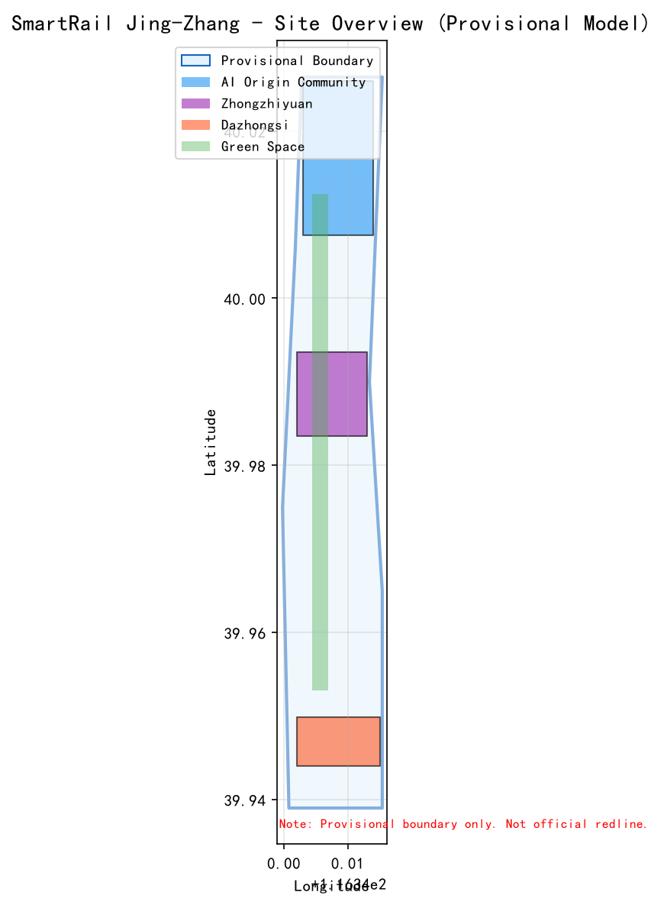
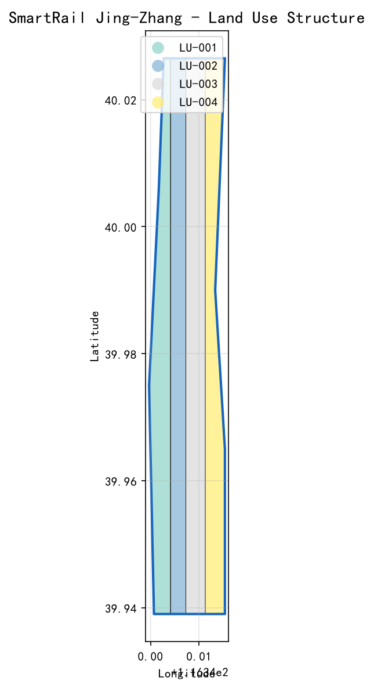
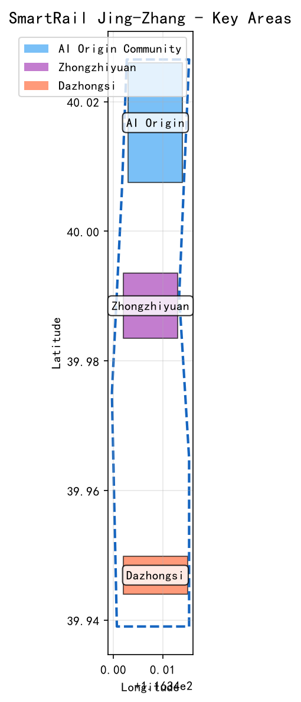
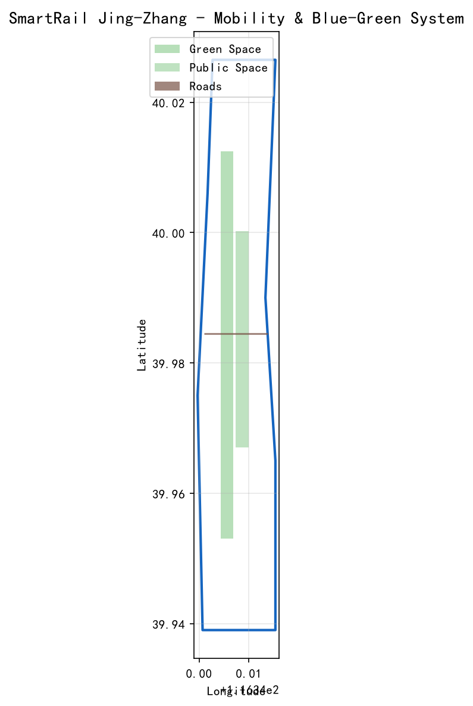
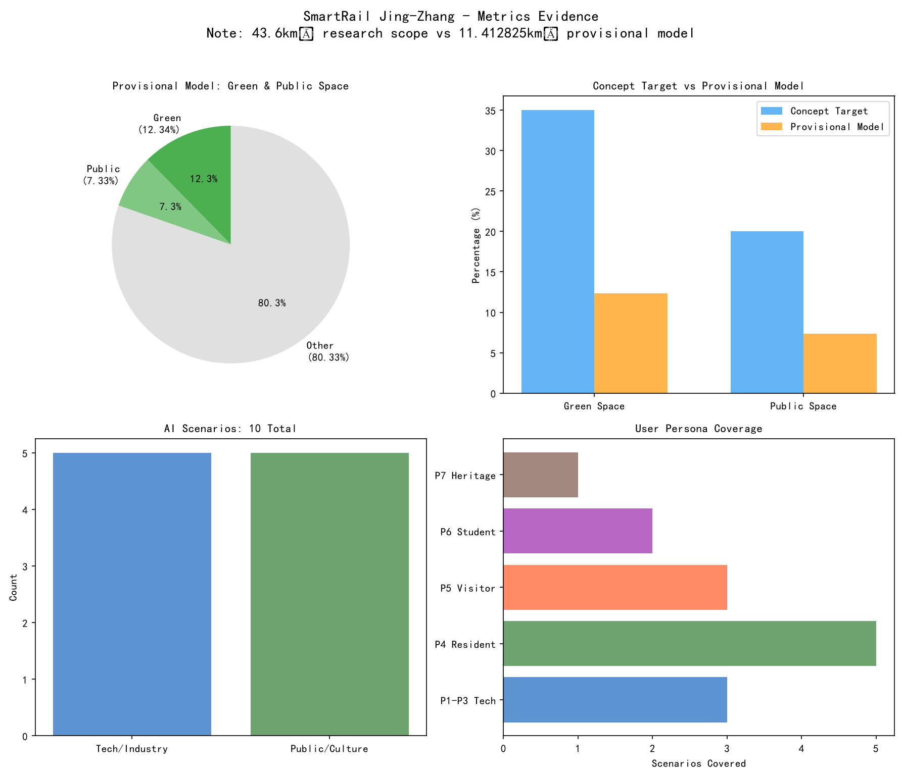

智轨·京张 — SmartRail Jing-Zhang — 沿着百年铁轨，驶向AI创新策源地
以「智轨·京张」（SmartRail Jing-Zhang）为品牌愿景，将京张铁路百年自主创新精神转化为空间叙事，提出三大AI朝圣地标（智光·她、智轨之门、铁轨记忆廊）、10个AI场景卡、七类用户画像、三区两翼协同布局、荣誉展示体系和年度活动运营体系，目标建设世界级AI创新街区。
智轨·京张 — 沿着百年铁轨，驶向AI创新策源地
设计依据与资料清单
本方案基于以下公开资料构建：
- 海淀区百年京张AI创新带城市设计公开征集公告 来源
- 面向智能体任务书 来源
- 京张铁路遗址公园公开规划信息 来源
- 海淀区国土空间规划公开信息 标准
- 全球AI创新生态公开案例研究
所有资料均来自公开或已清权来源。完整来源索引见 sources.json，指标复算见 metrics.json，标准覆盖见 standard_matrix.json，设计深度见 design_depth_matrix.json。详细设计文件见 01_总体概念设计.md 至 06_活动运营.md。
本方案使用 brief/site-package/geometry/ 中的临时设计模型（provisional_only）。当前几何模型范围约11.412825平方公里，不等同于公告中约43.6平方公里的统筹研究范围。临时边界仅用于方案生成、展示和自检，不得作为官方红线或法定控制依据。正式数据发布后需重新复算所有依赖边界的指标和图表。空间数据

三层范围工作框架
本方案采用三层递进的工作框架：
第一层：统筹研究范围（约43.6平方公里） 覆盖京张铁路遗址公园及周边区域，研究AI创新生态、产业布局、人才流动和区域协同。目标是提出「智轨·京张」的总体概念、品牌定位和三区两翼协同逻辑。深度
第二层：总体设计范围 在统筹研究基础上，对京张铁路遗址公园沿线及重点辐射区域进行城市设计，达到控制性详细规划深度。重点解决东西缝合、南北贯通、公共空间活化和AI场景植入。深度
第三层：重点区域范围 对三个核心区（AI原点社区、众智园AI自主创新加速区、大钟寺AI产业集聚区）进行详细设计，达到规划综合实施方案深度。深度
| 层级 | 设计问题 | 方案回答 | 数据落点 |
|---|---|---|---|
| 统筹研究范围 | AI产业生态和未来城市形态如何组织 | 「智轨·京张」品牌+三区两翼协同 | compliance_matrix.json |
| 总体设计范围 | 产业空间、城市更新、交通市政和风貌如何落图 | 一轴三区两翼多节点空间结构 | geometry/land_use.geojson |
| 重点区域范围 | 三处片区如何达到详细设计深度 | AI原点+众智园+大钟寺各有定位 | geometry/key_areas.geojson |

统筹研究范围产业与未来城市研究
品牌命名：「智轨·京张」
中文名：智轨·京张 英文名：SmartRail Jing-Zhang
命名逻辑：
- 「轨」：既是京张铁路的铁轨，也是AI时代的「数据轨道」「创新轨道」「算力轨道」
- 「智」：人工智能、智慧城市、智慧生活
- SmartRail：直观翻译"智轨"，便于国际传播
- Jing-Zhang：保留京张专有地名，彰显历史文化底蕴
品牌故事：
100年前，詹天佑用铁轨连接北京与张家口，证明中国人能自主设计铁路。 100年后，我们用「智轨」连接历史与未来，愿景是让AI让城市更美好。
Logo方向： 以铁轨的平行线为基础图形，融入数据流、电路板纹理，形成「轨」与「智」的视觉融合。色彩采用深空蓝（科技感）+ 铁锈红（历史感）。来源
三大定位
| 定位 | 内涵 | 空间载体 |
|---|---|---|
| 百年京张文化带 | 铁路遗产活化、工业文化传承 | 遗址公园铁轨沿线 |
| 都市AI生活体验带 | AI走进日常生活、可体验的未来城市 | 小月河场景赋能翼 |
| AI融合创新带 | AI产业集聚、创新生态、全栈自主 | 众智园+大钟寺 |
五大功能
1. AI全栈自主创新体系 — 目标构建从芯片到应用的全链条 2. 世界级AI创新生态 — 愿景打造人才、资本、数据、场景四位一体的生态 3. AI+场景赋能新范式 — 探索AI融入医疗、教育、交通、法律 4. 智能化AI活力城市 — 愿景实现人机共生的城市生活 5. AI治理全球话语权 — 力争在开源、透明、可复核的城市治理领域取得突破
三区两翼协同
| 区域 | 名称 | 目标定位 | 与「轨」的关联 |
|---|---|---|---|
| 核心区1 | AI原点社区 | 目标建设世界级AI创新生态 | 智轨起点站：创新策源 |
| 核心区2 | 众智园AI自主创新加速区 | 目标建设全栈自主与治理标准高地 | 智轨加速段：技术攻关 |
| 核心区3 | 大钟寺AI产业集聚区 | 目标打造智能原生新业态门户 | 智轨到达站：场景落地 |
| 翼1 | 中关村科技服务翼 | 愿景提供资本赋能与IP服务 | 智轨补给站：资源供给 |
| 翼2 | 小月河场景赋能翼 | 愿景打造AI场景体验与活力城市 | 智轨观景台：公众体验 |
协同逻辑（愿景）：原点社区孵化→众智园加速→大钟寺产业化→中关村赋能→小月河体验→反馈原点社区，目标形成闭环创新生态。
空间结构：「一轴三区两翼多节点」
- 一轴：京张铁路遗址公园活力轴
- 三区：AI原点社区（北）、众智园（中）、大钟寺（南）
- 两翼：中关村科技服务翼（西）、小月河场景赋能翼（东）
区域协同矩阵（概念建议）
本方案提出与周边区域的协同合作方向，所有合作事项均为概念建议，不构成已确定的政府安排或企业承诺。
| 协同区域 | 建议合作事项 | 要素流向 | 来源与边界 |
|---|---|---|---|
| 北纬社区 | AI人才居住配套、社区服务共享 | 人才流动、服务辐射 | 待协商，非已确定安排 |
| 未来科学城 | AI基础研究协同、算力共享 | 研究成果、算力资源 | 待协商，非已确定安排 |
| 怀柔科学城 | 大科学装置数据共享、AI+科学交叉研究 | 科学数据、研究人才 | 待协商，非已确定安排 |
| 经开区 | AI+智能制造、自动驾驶测试 | 技术转化、测试场景 | 待协商，非已确定安排 |
| 京津冀 | AI产业协同发展、人才流动 | 产业资源、人才流动 | 待协商，非已确定安排 |
注：以上协同事项均为概念建议，具体合作需待各方协商确定。不涉及已承诺的政策、资金或企业安排。
全球AI创新生态案例
以下案例基于公开资料研究，所有来源已标注。案例仅供概念参考，不构成对海淀的具体政策建议。
| 案例 | 核心经验 | 不照搬局限 | 海淀转化方向 | 来源与用途边界 |
|---|---|---|---|---|
| 硅谷 | 风投+大学+开放文化 | 市场自发vs政策引导 | 中关村翼：投融资对接 | NVCA年报、Stanford官网；仅供概念参考 |
| 前海 | 政策特区+产业集聚 | 空地起步vs建成区更新 | AI原点社区：政策试点 | 前海管理局官网、国务院批复文件；政策不可直接复制 |
| 伦敦科技城 | 遗产活化+轻触式支持 | 缺乏统一品牌叙事 | 遗址公园：工业遗产+AI | 伦敦市政府官网、Tech Nation年报；仅供概念参考 |
| 首尔DMC | 文化科技融合 | 单一主体开发 | 大钟寺：AI+文化消费 | 首尔市政府官网、DMC官网；仅供概念参考 |
| 新加坡纬壹 | 产城融合+绿色生态 | 缺乏遗产维度 | AI原点社区：产城融合 | JTC Corporation官网；仅供概念参考 |
| 筑波科学城 | 科研集聚+长期培育 | 产业转化效率低 | 全区域：长期创新策源 | 筑波市官网、日本内阁府；仅供概念参考 |
总体设计范围城市更新与控规深度城市设计
空间结构
「一轴三区两翼多节点」
- 一轴：京张铁路遗址公园活力轴（南北贯通）
- 三区：AI原点社区、众智园、大钟寺
- 两翼：中关村科技服务翼、小月河场景赋能翼
- 多节点：AI场景节点、文化展示节点、公共活动节点
东西缝合策略
京张铁路将城市东西割裂，本方案提出三层缝合：
| 层次 | 策略 | 设施 |
|---|---|---|
| 地面层 | 连续步道+自行车道+无障碍通道 | 消除断点，保证步行连续性 |
| 空中层 | 景观天桥+观景平台+AI互动廊道 | 跨越铁路，提供俯瞰视角 |
| 地下层 | 地下商业连通+停车共享+市政管线整合 | 地下空间利用，减少地面割裂 |
南北贯通策略
以遗址公园为脊梁，形成南北连续的公共空间系统：
- 北段：清河生态绿楔+AI研发园区
- 中段：大学创新走廊+AI原点社区
- 南段：大钟寺产业门户+城市活力客厅
更新对象与功能比例
| 更新类型 | 面积占比 | 主要功能 |
|---|---|---|
| 保留 | 约30% | 现状优质建筑、历史遗存、成熟社区 |
| 改造 | 约40% | 老旧厂房→AI创新空间、闲置楼宇→人才公寓 |
| 新建 | 约30% | AI地标、公共空间、创新服务平台 |
注：以上比例为概念建议，具体指标需待官方控规条件确认后复算。深度
重点区域详细设计
深度 空间数据
AI原点社区
定位：目标建设世界级AI创新生态的核心引擎
空间结构：「一核一环多组团」
- 一核：AI创新中心（研发+展示+服务）
- 一环：创新活力环道
- 多组团：研发组团、孵化组团、生活组团、文化组团
核心设施：AI创新中心、人才公寓、公共服务中心、中央创新广场
众智园AI自主创新加速区
定位：目标建设AI全栈自主创新与AI治理标准输出高地
空间结构：「双轴三片区」
- 双轴：创新轴（南北）+ 服务轴（东西）
- 三片区：研发区、加速区、生活区
核心设施：AI算力中心、AI开源社区总部、AI治理实验室
大钟寺AI产业集聚区
定位：目标打造智能原生新业态与消费体验门户
空间结构：「一街两坊多节点」
- 一街：AI体验主街
- 两坊：AI创新坊（产业）+ AI生活坊（服务）
- 多节点：AI场景体验点
核心业态：AI无人零售、AI健康驿站、AI教育工坊、AI法律援助亭

用地、建筑规模与拆改留方案
用地分类
| 用地类型 | 面积占比 | 主要功能 |
|---|---|---|
| 研发产业用地 | 约40% | AI研发、创新孵化、开源协作 |
| 商业服务用地 | 约15% | 商业零售、企业服务、国际交流 |
| 居住用地 | 约20% | 人才公寓、配套居住 |
| 公共管理与公共服务用地 | 约10% | 公共服务、教育、医疗 |
| 绿地与广场用地 | 约10% | 公共空间、绿地、广场 |
| 道路与交通设施用地 | 约5% | 道路、停车、交通设施 |
注：以上比例为概念建议，具体指标需待官方控规条件确认后复算。深度
建筑更新分类
| 更新类型 | 面积占比 | 主要功能 |
|---|---|---|
| 保留 | 约30% | 现状优质研发楼宇、历史遗存建筑 |
| 改造 | 约40% | 老旧厂房→共享办公+创客空间、闲置楼宇→人才公寓 |
| 新建 | 约30% | AI地标建筑、公共服务中心、创新服务平台 |
注：以上分类为概念建议，具体拆改留方案需待现状建筑调查、权属确认和控规条件后确定。深度
交通、轨道、市政与公共服务设施
交通组织
道路系统：
- 主干道：维持现状，优化交叉口
- 次干道：增加慢行空间，减少机动车道
- 支路：打通断头路，形成微循环
慢行系统：
- 步道：连续无障碍步道系统
- 自行车道：专用自行车道+共享单车停放点
- 无障碍：全区域无障碍通道
轨道接驳：
- 与现有地铁站点无缝接驳
- AI无人驾驶接驳车串联各核心区
市政设施
新型基础设施：
- 分布式算力节点（5G+边缘计算）
- AI能源管理系统
- 智慧路灯网络
传统市政设施：
- 给排水、电力、通信管线更新
- 雨水花园+海绵城市设施
- 分布式能源站
公共服务设施
- AI医疗健康驿站（每500米服务半径）
- AI教育工坊（社区级）
- AI法律援助亭（商业区+社区）
- 创新服务平台（核心区）
深度 深度

AI 创新生态、人才画像与 AI+ 场景
来源 标准
七类用户画像
| 画像 | 特征 | 核心需求 | 主要空间 |
|---|---|---|---|
| P1 AI开发者 | 25-35岁，技术导向 | 算力、数据、开源协作 | 众智园、AI原点社区 |
| P2 AI创业者 | 28-40岁，商业导向 | 资金、场地、政策 | 中关村翼、大钟寺 |
| P3 AI研究员 | 30-50岁，学术导向 | 数据、实验环境、合作 | AI原点社区、众智园 |
| P4 周边居民 | 全年龄，生活导向 | 医疗、教育、安全 | 小月河翼、大钟寺 |
| P5 国际访客 | 全年龄，体验导向 | 文化体验、技术展示 | 遗址公园、大钟寺 |
| P6 青少年学生 | 12-22岁，学习导向 | 科普教育、动手实践 | 小月河翼、AI原点社区 |
| P7 铁路遗产文化工作者 | 30-60岁，文化导向 | 历史研究、遗产活化 | 遗址公园 |
包容性服务剖面
本方案特别关注以下群体的服务可及性，确保公共空间和AI场景不排斥任何人群：
| 群体 | 特征 | 服务设计要点 | 非数字替代渠道 |
|---|---|---|---|
| 老年人 | 65岁以上，可能行动不便 | 大字体界面、语音交互、慢节奏体验 | 现场人工服务窗口、电话热线、纸质导览 |
| 行动障碍者 | 轮椅使用者、步态不稳 | 全区域无障碍通道、坡道、电梯 | 无障碍卫生间、专用停车位、轮椅借用 |
| 视听障碍者 | 视障、听障、色盲 | 触觉导览、语音描述、字幕、高对比度 | 盲文标识、手语服务、人工引导 |
| 认知障碍者 | 学习困难、记忆衰退 | 简化界面、清晰标识、重复引导 | 人工陪伴服务、紧急联系人机制 |
| 儿童与照护者 | 12岁以下及陪同家长 | 安全围栏、亲子设施、照护者休息区 | 现场工作人员、母婴室、急救站 |
| 低数字素养人群 | 不熟悉智能设备 | 简化操作流程、大按钮、语音引导 | 人工服务台、纸质表单、电话预约 |
| 无智能终端人群 | 无手机或网络 | 公共终端、离线服务 | 现场购票、纸质地图、人工登记 |
投诉与退出机制：
- 所有AI场景均提供人工服务替代通道
- 设立现场投诉信箱和电话热线
- 用户可随时退出AI服务，不承担任何责任
- 投诉处理承诺48小时内响应
10张AI场景卡（含数据治理矩阵）
以下场景均为概念设想，不构成已批准的实施方案。所有数据治理要求待正式运营前由专业团队深化论证。
| 编号 | 场景 | 服务对象 | 数据分类 | 最小化方案 | 保存/删除 | 人工复核 | 申诉机制 | 安全停机 | 试点KPI |
|---|---|---|---|---|---|---|---|---|---|
| S1 | AI算力共享驿站 | P1开发者、P3研究员 | 使用日志、算力调用 | 仅采集必要资源使用数据 | 使用日志保存30天后删除 | 异常使用人工审批 | 用户可申诉资源分配 | 算力过载自动降级 | 资源利用率、用户满意度 |
| S2 | AI开源协作广场 | P1开发者 | 代码提交、协作记录 | 仅记录公开代码贡献 | 代码永久保留，个人数据可删除 | 社区Peer Review | 贡献争议人工仲裁 | 协作平台故障降级 | 活跃贡献者数、代码质量 |
| S3 | AI模型测试验证场 | P1开发者、P2创业者 | 测试数据、模型输出 | 测试数据脱敏处理 | 测试数据保存90天后删除 | 高风险测试人工审批 | 测试结果争议人工复核 | 测试失败自动停止 | 测试通过率、安全事件数 |
| S4 | AI创业路演 | P2创业者 | 商业计划、演示内容 | 仅采集必要展示信息 | 路演结束后可删除 | 路演项目人工筛选 | 投资争议人工调解 | 系统故障降级为线下 | 路演成功率、对接效果 |
| S5 | AI技术展示中心 | P2创业者、P5访客 | 互动数据、体验反馈 | 互动数据匿名化 | 体验数据保存30天后删除 | 展览内容定期审核 | 展示问题人工处理 | 展示故障降级为静态 | 参观者满意度、互动率 |
| S6 | AI无人驾驶接驳 | P4居民、P5访客、P6学生 | 位置、调度数据 | 仅采集调度必要位置 | 位置数据保存7天后删除 | 安全员随车，异常人工接管 | 乘客可随时要求停车 | 紧急情况立即停车 | 安全运行率、乘客满意度 |
| S7 | AI医疗健康驿站 | P4居民 | 健康数据、问诊记录 | 健康数据加密存储 | 用户可随时删除个人数据 | AI初筛+执业医师复核 | 医疗争议人工复核 | 紧急情况转人工 | 问诊准确率、用户隐私投诉 |
| S8 | AI青少年科普工坊 | P6学生、P4居民 | 学习记录、活动数据 | 不采集未成年人个人信息 | 活动记录匿名保存 | 教学内容教育专家审核 | 学习问题人工辅导 | 系统故障降级为人工 | 学习效果、安全事件数 |
| S9 | AI多语言文旅导览 | P5访客、P4居民、P7文化工作者 | 导览数据、位置 | 导览数据匿名化 | 导览数据保存30天后删除 | 讲解内容历史专家审核 | 导览问题人工处理 | 导览故障降级为人工 | 导览满意度、历史准确性 |
| S10 | AI社区治理 | P4居民 | 诉求内容、投票数据 | 诉求内容加密存储 | 用户可随时删除个人数据 | AI分类+社区工作者确认 | 治理争议人工仲裁 | 系统故障降级为人工 | 诉求处理率、居民满意度 |
产业测试验证场景：S3（AI模型城市测试）、S6（自动驾驶规模化测试）、S10（AI治理社区验证）
贡献者名录与口述史数据治理：
- 明示同意：贡献者需明确同意其GitHub ID和贡献记录公开展示
- 审核机制：所有贡献记录需经项目维护者审核确认
- 更正权利：贡献者可申请更正其贡献记录
- 撤回机制：贡献者可申请撤回其名字，撤回后从展示中移除
- 口述史投稿：市民投稿需明示同意公开，经历史专家审核后方可纳入知识库
蓝绿空间、公共空间与城市风貌
深度 空间数据 空间数据
京张遗址公园公共空间分区
| 区域 | 功能 | 主要设施 |
|---|---|---|
| 铁轨记忆区 | 历史体验 | 铁轨记忆廊、历史展墙 |
| 创新展示区 | 科技展示 | AI互动装置、开源代码墙 |
| 生活休闲区 | 日常休闲 | 绿地、步道、儿童活动场 |
| 生态缓冲区 | 生态保护 | 雨水花园、生态湿地 |
三大AI朝圣地标
地标1：「智光·她」
- 位置：AI原点社区中央广场
- 形态：30米高，由流动赛博粒子光束组成的东方女性人形群像
- 日间：淡银灰金属微光，阳光下细碎光尘
- 夜间：四季主题色（春粉青、夏冰蓝、秋金橙、冬冷银白）
- 交互：地面感应涟漪、语音呼叫讲故事
- 致敬：京张铁路女性建设者（女工、测绘辅助、医务后勤、铁路家属）
地标2：「智轨之门」
- 位置：遗址公园主入口
- 形态：18-20米高粒子拱门
- 日间：立柱淡铁锈红，拱顶银白色
- 夜间：外侧历史影像（铁锈红），内侧代码数据流（科技蓝）
- 交互：穿越门洞触发涟漪渐变
- 寓意：从过去到未来的时空通道
地标3：「铁轨记忆廊」
- 位置：遗址公园中段
- 长度：200-300米
- 四段历史：詹天佑勘测→蒸汽机车→高铁时代→AI时代
- 交互：脚步感应触发涟漪和历史影像
- 寓意：走在铁轨上，穿越百年历史
荣誉展示体系
| 装置 | 类型 | 规模 | 功能 |
|---|---|---|---|
| 贡献者粒子纪念树 | 主体装置 | 22-25米，可旋转 | 承载贡献者名录、AI里程碑、开发者荣誉 |
| AI里程碑碑 | 地面装置 | 嵌入步道 | 记录AI发展关键时刻 |
| 开发者荣誉柱 | 立柱装置 | 高2-3米 | 纪念杰出开源开发者 |
公共空间组件库
| 组件 | 功能 |
|---|---|
| AI智慧路灯 | 自动调光、环境监测、应急广播 |
| AI互动座椅 | 无线充电、环境感应、语音交互 |
| AI导览屏 | 多语言导览、路线推荐、活动信息 |
| AI垃圾分类箱 | 自动识别分类、积分奖励 |
文化叙事设计
总叙事主题
铁轨之上，跨越百年的人机对话
三段式故事主线
| 时代 | 主题 | 情感基调 |
|---|---|---|
| 过去（1905-1949） | 铁轨筑梦：自主、坚韧、开拓 | 艰辛、自豪、突破 |
| 当下（1949-2025） | 遗产回响：传承、沉淀、觉醒 | 沉思、发现、连接 |
| 未来（2025-） | AI新生：共生、希望、无限 | 希望、活力、无限可能 |
四大叙事线索
| 线索 | 对应地标 | 叙事内容 |
|---|---|---|
| 女性力量 | 智光·她 | 致敬被历史遗忘的女性建设者 |
| 集体贡献 | 粒子纪念树 | 每片光叶是一个贡献者 |
| 历史时间 | 铁轨记忆廊 | 脚踩铁轨，穿越百年 |
| 创新精神 | 智轨之门 | 穿过门洞，从过去踏入未来 |
指标体系、面积复算与合规矩阵
核心指标
重要说明：本方案区分两个范围层级——统筹研究范围（公告定义，约43.6平方公里）和临时几何模型范围（当前提交，约11.412825平方公里）。以下指标分别标注来源和置信度。
| 指标 | 数值 | 来源 | 置信度 | 说明 |
|---|---|---|---|---|
| 统筹研究范围 | 约43.6平方公里 | 公告文本 | 概念引用 | 公告定义的研究范围，非几何复算 |
| 临时几何模型范围 | 约11.412825平方公里 | geometry/site_boundary.geojson | provisional_only | 当前临时边界，待官方数据替换 |
| 绿地比例（概念目标） | 约35% | 概念设计 | 设想 | 作为设计愿景，非当前几何复算值 |
| 绿地比例（临时模型值） | 约12.3423% | geometry/green_space.geojson | provisional_only | 基于临时边界的几何模型值 |
| 公共空间比例（概念目标） | 约20% | 概念设计 | 设想 | 作为设计愿景，非当前几何复算值 |
| 公共空间比例（临时模型值） | 约7.3281% | geometry/public_space.geojson | provisional_only | 基于临时边界的几何模型值 |
| AI场景节点数 | 10 | 本方案设计 | 已确定 | 见场景卡清单 |
| AI朝圣地标数 | 3 | 本方案设计 | 已确定 | 见地标设计 |
| 年度活动数 | 4 | 本方案设计 | 已确定 | 见活动体系 |
注：35%/20%为概念设计愿景，12.3423%/7.3281%为当前临时几何模型值。正式数据发布后需重新复算。指标 指标

更新项目清单、实施政策与分期计划
深度 深度 空间数据
近期（1-2年）
| 项目 | 类型 | 位置 | 建议责任角色 | 前置条件 | 决策门 | 成本等级 | 成功指标 |
|---|---|---|---|---|---|---|---|
| 京张遗址公园一期 | 公共空间 | 铁轨沿线 | 海淀区政府 | 文物保护审批、土地权属确认 | 规划审批 | 中等 | 公共空间开放、人流量 |
| 「智光·她」雕塑 | 地标建设 | AI原点社区 | 政府+艺术团队 | 文物保护评估、消防审批 | 专业论证 | 高 | 观众满意度、安全运行 |
| 智轨之门 | 地标建设 | 遗址公园入口 | 政府+设计团队 | 结构安全论证、无障碍审批 | 专业论证 | 中等 | 观众满意度、安全运行 |
| 铁轨记忆廊一期 | 历史体验 | 遗址公园中段 | 政府+文保单位 | 文物保护评估、历史内容审核 | 文保审批 | 中等 | 参观者满意度、历史准确性 |
中期（3-5年）
| 项目 | 类型 | 位置 | 建议责任角色 | 前置条件 | 决策门 | 成本等级 | 成功指标 |
|---|---|---|---|---|---|---|---|
| 众智园AI算力中心 | 产业设施 | 众智园 | AI企业+政府 | 能源供应、环评审批 | 专业论证 | 高 | 算力利用率、企业入驻率 |
| 粒子纪念树 | 荣誉展示 | AI原点社区广场 | 政府+技术团队 | 结构安全论证、消防审批 | 专业论证 | 中等 | 参与者满意度、技术稳定性 |
| 大钟寺AI体验街 | 产业空间 | 大钟寺 | 商业运营方 | 商业可行性论证、招商 | 商业决策 | 中等 | 商户入驻率、消费额 |
| 小月河AI场景公园 | 公共空间 | 小月河翼 | 政府+社区 | 环评审批、社区参与 | 规划审批 | 中等 | 居民满意度、使用率 |
远期（5-10年）
| 项目 | 类型 | 位置 | 建议责任角色 | 前置条件 | 决策门 | 成本等级 | 成功指标 |
|---|---|---|---|---|---|---|---|
| AI全域无人驾驶示范区 | 基础设施 | 全区域 | 交通部门+企业 | 法规制定、安全测试 | 政策决策 | 高 | 安全运行率、公众接受度 |
| 国际AI创新中心 | 产业设施 | AI原点社区 | 政府+国际机构 | 国际合作协议、资金 | 政策决策 | 高 | 国际合作项目数、人才流入 |
运维主体与退出机制：
- 所有项目需明确运维责任主体，建立定期评估机制
- 项目失败或不可持续时，启动退出程序，包括资产处置、人员安置和信息公开
- 年度评估不达标项目需制定整改计划或启动退出
年度活动体系
| 活动 | 时间 | 内容 | 运维主体 | 开放准入 | 退出机制 |
|---|---|---|---|---|---|
| 京张纪念周 | 5月 | 历史分享会、女性建设者纪念、铁路文物展 | 政府+文保单位 | 免费开放，无需预约 | 参与人数持续低时调整形式 |
| AI科创周 | 8月 | 开源沙龙、AI成果展示、开发者马拉松 | 开发者社区+企业 | 开发者免费，公众预约 | 参与度低时调整形式 |
| 四季光影展演 | 1/4/7/10月 | 粒子装置特别展演、夜间灯光秀 | 政府+技术团队 | 免费开放 | 技术故障时降级为静态展示 |
| 智轨峰会 | 11月 | 全球AI城市论坛+开发者大会+颁奖典礼 | 政府+行业协会 | 付费+邀请制 | 参与度低时调整形式 |
| 四季光影展演 | 1/4/7/10月 | 粒子装置特别展演、夜间灯光秀 | |||
| 智轨峰会 | 11月 | 全球AI城市论坛+开发者大会+颁奖典礼 |
运营机制
- 贡献者粒子纪念树更新：PR合并后自动更新光叶
- 历史知识库迭代：接收市民口述史料投稿
- 线上云游览：虚拟游览地标与贡献名录
- 大钟寺商业联动：公园活动向大钟寺导流，企业反哺公园
风险、版权与合规说明
深度 空间数据 来源
资料合法性与设计意图
本方案所有引用资料均来自公开或已清权来源，未使用非公开规划图件、内部数据或个人隐私信息。完整来源索引见 sources.json，每条来源均标注了来源类型、授权状态和使用限制。设计意图是在公开资料基础上，提出概念性、前瞻性的城市设计方案，为专业团队提供深化研究的参考框架。所有设计判断均基于公开可查的官方公告、政策文件和学术研究，不涉及任何非公开或未授权的信息来源。
版权授权与AI生成内容
方案文本采用 COMMUNITY-DISPLAY-ONLY 许可，所有生成图像均为AI辅助生成并标注生成工具。未使用未经授权的商标、字体、图片或肖像。AI生成内容仅作为概念表达和视觉化辅助，不作为事实证据或官方依据。所有多媒体内容均标注了生成工具、时间和已知局限性，确保透明度和可追溯性。
设计边界与证据链
所有内容均为概念建议与愿景阐述，不构成政府审定结论或法定规划。方案不涉及具体建设强度、建筑高度或容积率，不编造企业名单、投资额或产业承诺。几何数据来源于 brief/site-package/geometry/ 中的官方或临时边界，临时边界标注为 provisional_constraint，仅用于方案生成和展示。指标复算基于几何数据和公开来源，具体数值需待官方数据确认后精确复算。方案中的空间结构、场景设计、地标概念和运营设想均为概念方向，可供专业团队进一步深化论证。
待补资料与数据缺口
方案存在以下数据缺口，需在正式深化前补齐：
- 官方控规条件（容积率、建筑高度、建筑密度等）
- 现状建筑详细调查数据（建筑年代、结构、权属）
- 土地权属信息（产权人、使用年限、限制条件）
- 市政管线详细资料（给排水、电力、通信、燃气）
- 交通影响评估数据（现状流量、规划容量）
- 环境影响评估数据（噪音、空气质量、生态敏感区）
以上数据缺口已在 assumptions.json 和 missing_data_checklist.csv 中列明，待正式数据发布后需重新复算所有指标和设计结论。
参考资料
来源 来源
1. 海淀区百年京张AI创新带城市设计公开征集公告 2. 面向智能体任务书 3. 京张铁路遗址公园公开规划信息 4. 海淀区国土空间规划公开信息 5. 《城市设计管理办法》（住建部） 6. 全球AI创新生态案例研究报告 7. 《智慧城市技术参考框架》（国标） 8. AI伦理与城市治理相关文献
完整机器索引：见 sources.json、metrics.json、compliance_matrix.json、standard_matrix.json 与 design_depth_matrix.json
---
本方案为开放共创建议，不替代正式规划，不构成政府审定结论。所有空间落地建议均为概念建议，可供专业团队深化研究。